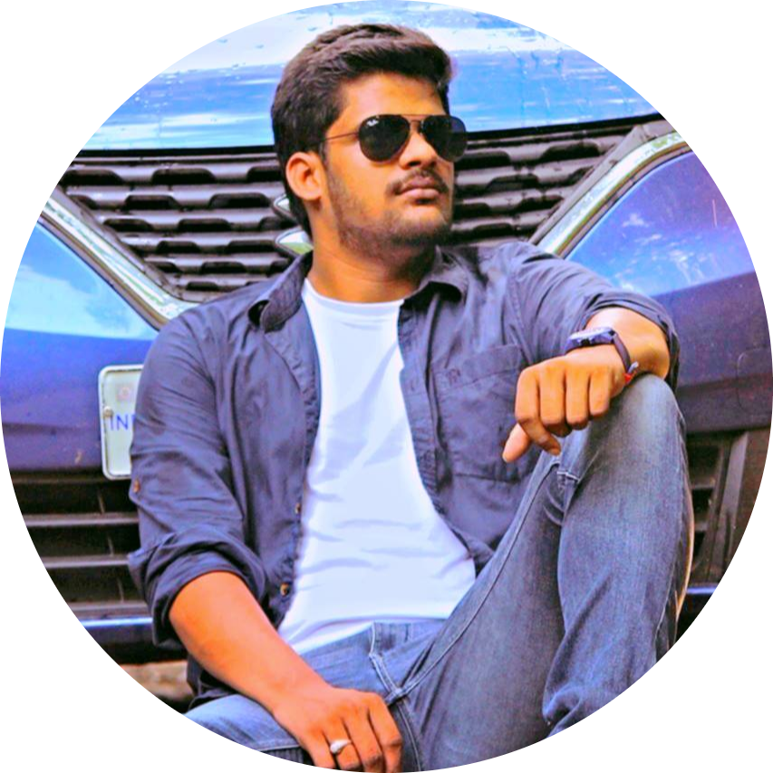

|  |
Jaya Krishna PandillapalliDevops Lead at Actyv AI A 💻 Techie driven by passion for learning new technologies and with a solid background in Cloud computing, Devops and Automation. |
| Dates | Works |
|---|---|
| 2016-2018 | Devops Engineer in FNC Hyderabad | 2018-2023 | Tech Lead in Locuz Bangalore |
| 2023-present | Devops Lead in ActyvAI Bangalore |
| AWS | ⭐⭐⭐⭐⭐ |
| Devops | ⭐⭐⭐⭐⭐ |
| Docker | ⭐⭐⭐⭐⭐ |
| Azure | ⭐⭐⭐⭐ |
| Kubernetes | ⭐⭐⭐⭐⭐ |
| Jenkins | ⭐⭐⭐⭐ |